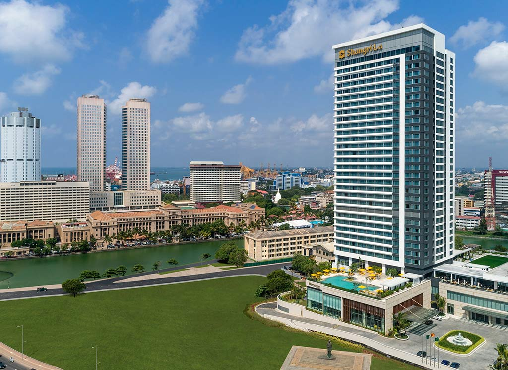
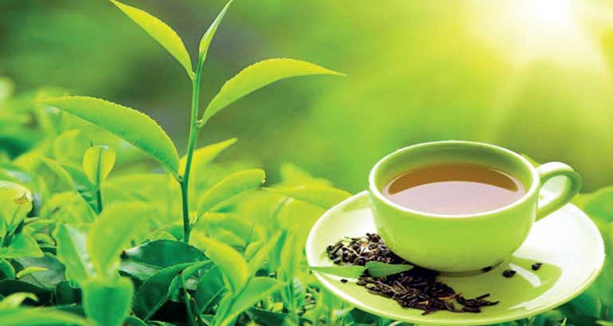
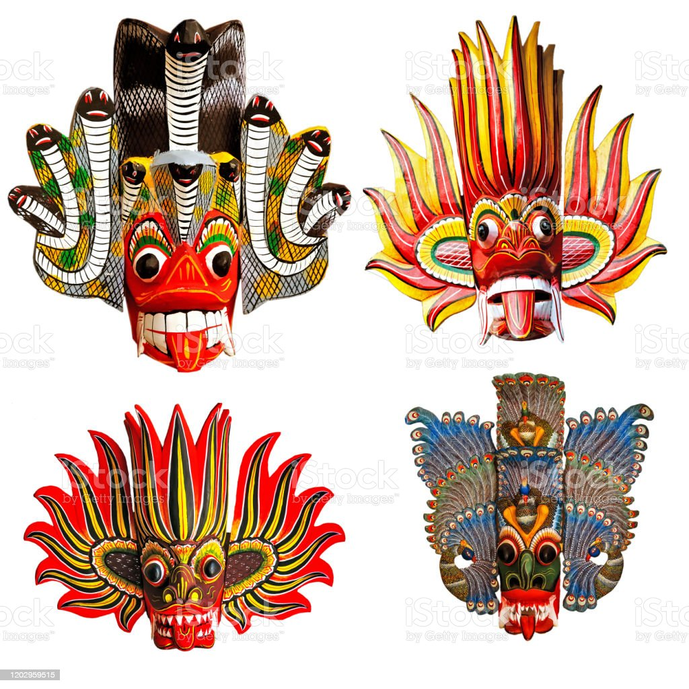
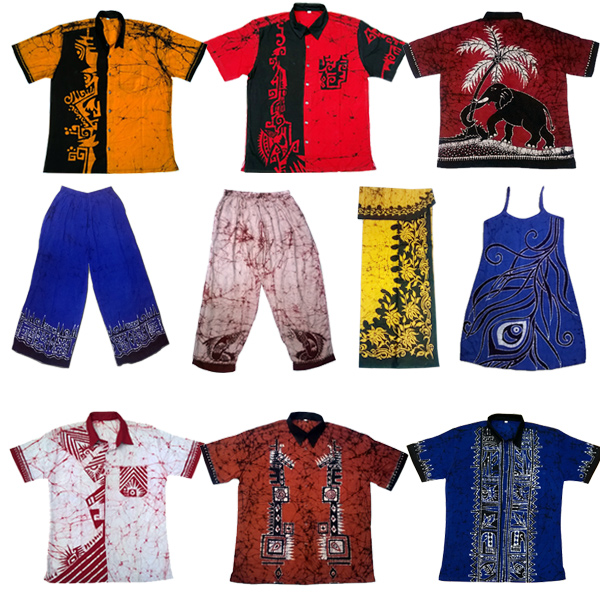

Hotels
Shangri-La Colombo
Galle Face Hotel

Marino Beach Colombo

Amaya Beach Passikudah

Elegant Green Beach Resort

Cinnamon Lodge Habarana

More hotels
Local Mechandise
Ceylon Tea
Ceylon tea is the island nation’s lifeblood, with tea boutiques spread all over. Golden Tips, Silver Tips, and Flowery Broken Orange Pekoe Fannings are among the luxury and exclusive teas available. A variety of teas flavoured with cinnamon, dried fruits, herbal blends, and local spices are available as infusions. Once your tea supply is gone, you can reuse the caddies.
Traditional Masks
The important aspect of Sri Lankan folklore and a vivid part of the island’s cultural identity. Local craftsmen in this coastal town use their deft hands to breathe life into a plain log and create exotic masks with intricate features. Popular devil masks, which were once only seen in folk dances, have now evolved into magnificent works of art. The are hand-carved wooden masks which were once used to fend off evil but are now only used to embellish traditional rituals and dances.
Gems

Sri Lanka, a gem-mining nation with an outstanding portfolio of excavated gems, is known as the Gem Island for this reason. The mining town of Ratnapura sells precious gems by the tonne, including rubies, topazes, amethysts, and aquamarines, which are among the most common purchases by tourists. Not to mention the country’s popular blue sapphires and moonstones. Gems are available for purchase in most tourist areas, such as Unawatuna and Kandy, which are densely packed with large and small gem shops. You depict the mining process in a number of museums. Although Sri Lanka is home to the world’s largest blue sapphires, Don’t hesitate to grab your choice.
Batik Wear
Batik is a traditional craft of a Javanese heritage that has been passed on from generation to generation, and it is as colourful as the island itself. If you ride across, you’ll find local men wearing batik sarongs and women wearing rainbow-hued batik sarees. From waxing to dying, every Sri Lankan batik garment are handcrafted. And no two designs are alike. As a result, it’s fair to assume that batik is Sri Lanka’s version of haute couture.
Donations
Save Ocean

Save Rain Forests